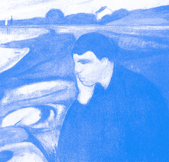

C. Le piège de la culpabilité
La personne prise dans ce tourbillon malsain de la surconsommation est portée, pour se donner bonne conscience, à rendre  l’entourage ou les circonstances de la vie responsables de sa déchéance. Il en résulte évidemment que les personnes gravitant autour de cet individu peuvent souvent avoir l’impression qu’elles sont partiellement coupables ou responsables de son comportement d’ivresse.
Les inconforts ressentis par la personne qui consomme l’amènent souvent à des manoeuvres de manipulation sur sa famille et ses collègues de travail dans l’espoir d’éviter de «perdre la face». Voyons un exemple qui illustre comment le piège de la culpabilité peut être insidieux et comment il n’est pas inévitable si nous apprenons sereinement à le surmonter.
Patricia vit avec Stéphane depuis 8ans et elle a deux enfants de 6 et 4 ans. La consommation répétée et excessive de son conjoint la dérange au point de se mettre en colère plus souvent qu’autrement. Tous les soirs, après le travail, Stéphane arrive chez lui avec sa caisse de bière. Le même scénario se répète depuis longtemps. Patricia exprime son désaccord car elle sait bien ce qui s’en vient: Stéphane boira tant qu’il ne s’endormira pas quelque part dans la maison, complètement ivre.
Alors, dès qu’elle le voit arriver avec ses provisions, elle réagit avec vigueur: « Pas encore ce soir ! » Et Stéphane de répondre comme d’habitude : « Tu n’es jamais contente et tu m’étouffes . Si tu ne criais pas constamment après moi, je ne boirais que deux bières. » Le ton monte alors d’un autre cran et la situation se détériore rapidement. La discussion prend fin lorsque Stéphane quitte la maison en claquant la porte et s’en va au bar, consommer avec ses amis.
Voyons comment Patricia aurait pu éviter ce piège pernicieux. Voyons comment elle aurait pu agir pour éviter de contribuer ainsi à détériorer de plus en plus sa relation avec son conjoint.
Prenons pour acquis que Stéphane est le seul vrai responsable de sa consommation. C’est lui qui fait le choix de prendre sa caisse de bière au détriment du climat familial. Mais dans l’exemple ci-dessus, sa conjointe lui ouvre toute grande une porte qui l’aide à se déculpabiliser et à renvoyer la responsabilité sur elle.
Si, au contraire, Patricia avait gardé son calme et fait mine de rien, son conjoint aurait été confronté à sa propre responsabilité de consommer. Il n’aurait eu personne à qui tendre le piège de la culpabilité. Voyons ça d’un peu plus près.
Il faut bien reconnaître que la colère de Patricia est légitime. Elle a tout à fait le droit d’avoir ses émotions, ses réactions. Cependant, si elle savait que la situation est irréversible elle pourrait réagir et même agir autrement. Si elle comprenait que le cycle de l’assuétude est commencé dès que Stéphane achète sa caisse de bière, ses émotions ne seraient peut-être pas les mêmes.
La soif d’alcool a déclenché un processus qui entraîne inévitablement cet homme à agir de cette façon inadaptée car, dans cet état, la fin justifie toujours les moyens. Tout ce que Stéphane veut c’est avoir la paix et pouvoir consommer au plus tôt. Il est en manque! Ce cycle ne s’arrêtera que lorsqu’il sera complètement ivre et s’endormira quelque part dans la maison. C’est irréversible!
Pour être fidèle à elle-même ( lire le chapitre 4 dans «Les émotions : source de vie»), Patricia doit manifester son désaccord d’une manière plus constructive pour elle et ses enfants. Elle pourrait, par exemple, se trouver des activités à faire avec ses fils et quitter la maison. Ainsi, elle serait à l’écoute de ses besoins et désirs; il est important qu’elle passe à l’action plutôt que de subir la situation. Ce serait alors son autonomie et son indépendance qui démontreraient qu’elle ne tolère plus les comportements de consommation de son conjoint.
Cette attitude est beaucoup plus efficace, car Stéphane se retrouve seul et ne peut rendre personne responsable de sa décision de consommer de l’alcool. C’est ce type d’attitude que nous appelons « lâcher prise »; il s’agit simplement de ne pas se laisser déranger par une situation qu’on n’a pas choisie.
Est-il surprenant que les personnes en voie de réadaptation de leur assuétude reconnaissent spontanément qu’ils sont les seuls à être responsables de leur choix de consommer ou de demeurer abstinents? Les conjoints qui ont osé faire le choix de se respecter eux-mêmes plutôt que de céder à l’invitation à la culpabilité n’en seront pas surpris.
|
|